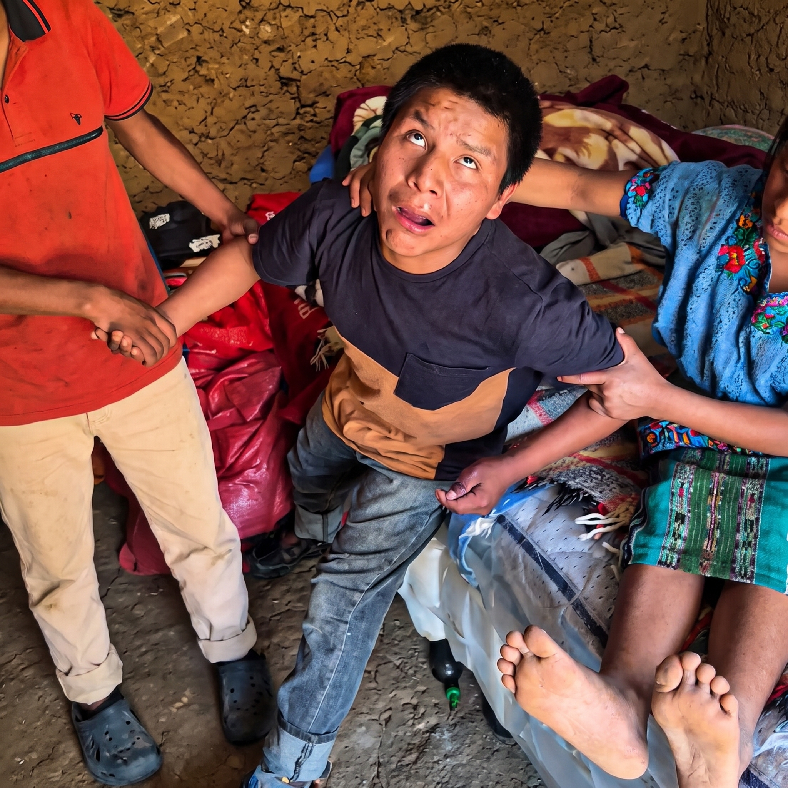
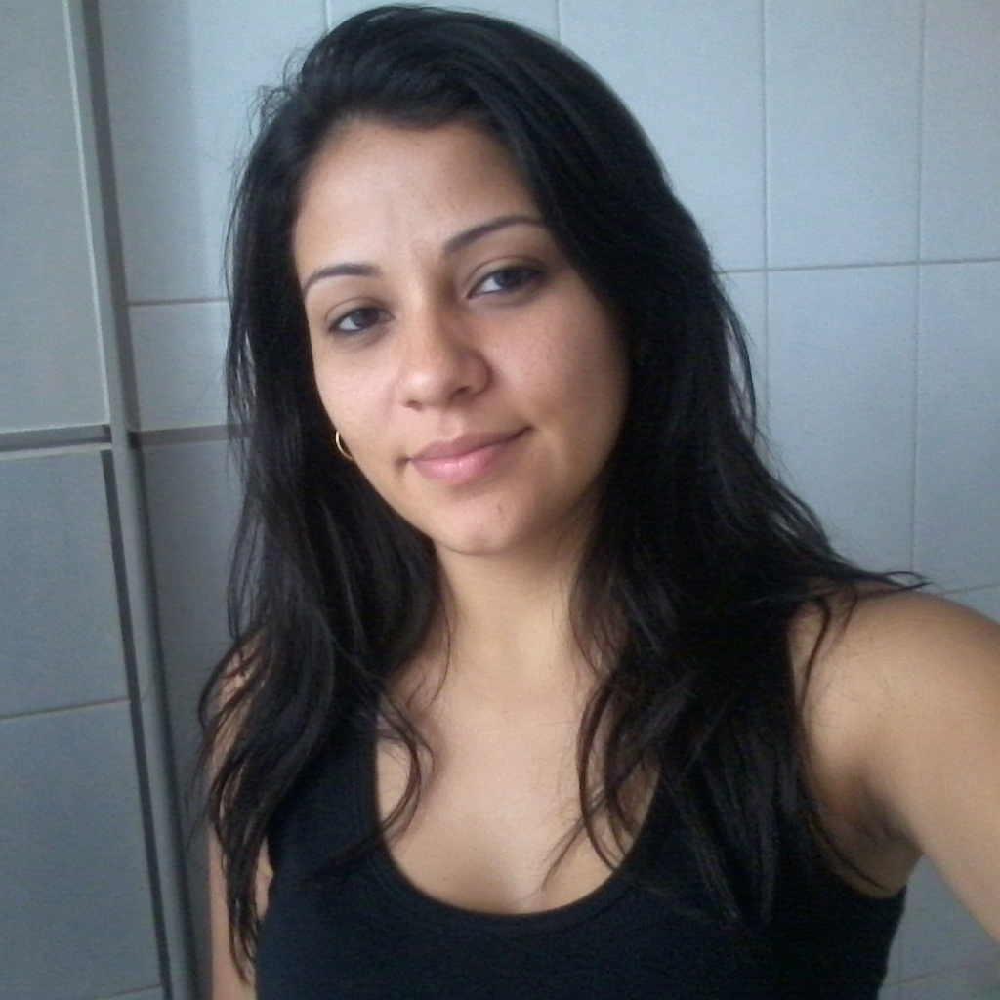
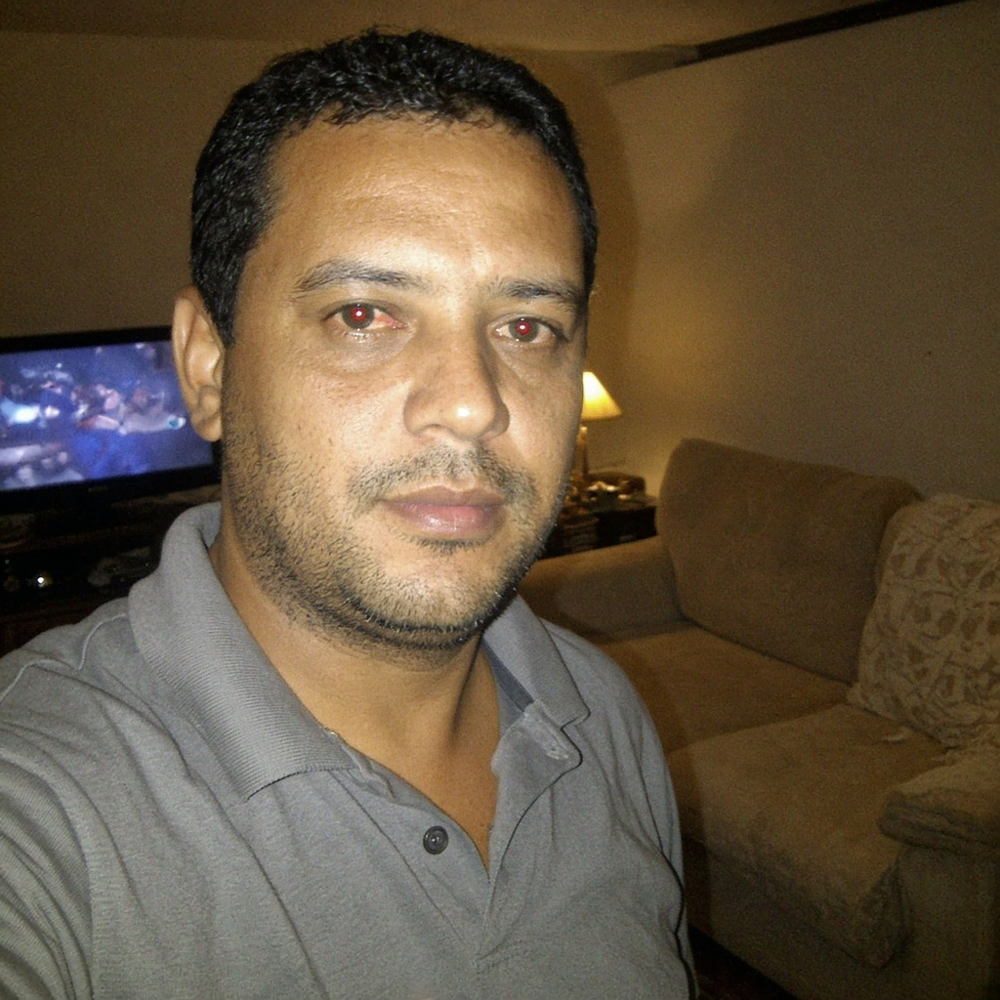
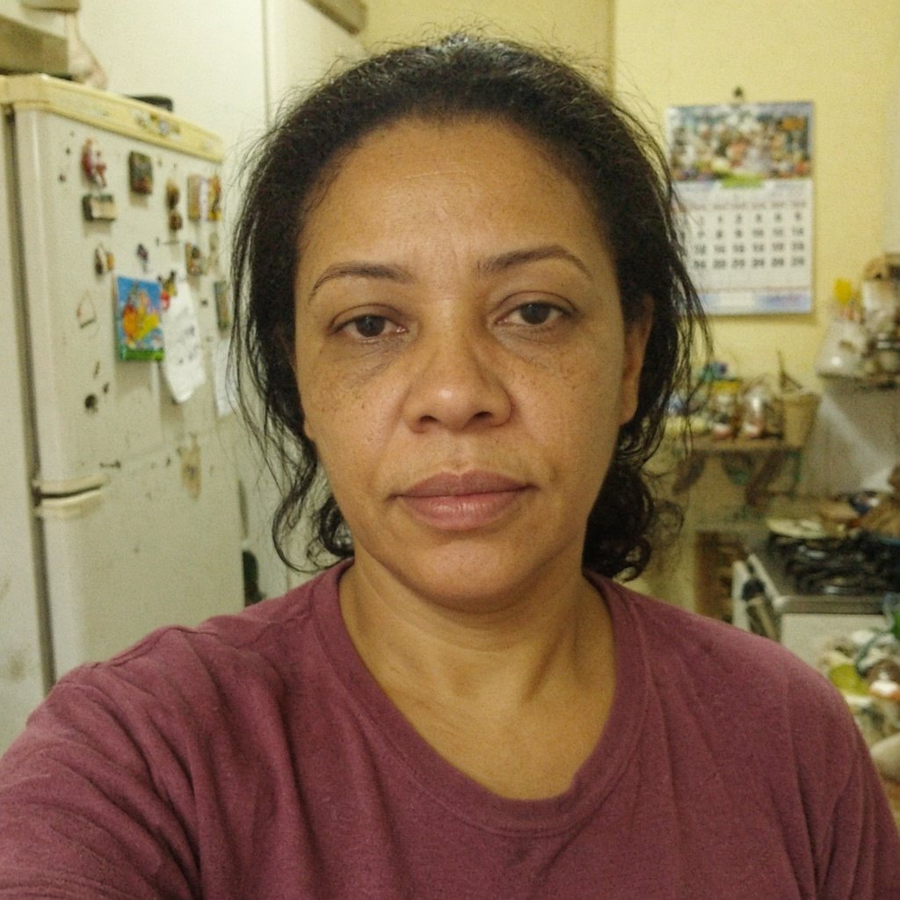

"Meu filho está lutando para sobreviver. A gente já não tem mais como bancar o tratamento sozinho."
O pequeno Kauê enfrenta uma batalha diária contra a epilepsia e precisa de cuidados constantes. Sua família está fazendo tudo o que pode para garantir o tratamento e os cuidados necessários para que ele continue lutando. Sem você ele pode morrer!

PIX seguro · 100% destinado ao oxigênio, aos medicamentos e aos insumos do Kauê · Meta R$ 44.200
⚠️ Crises severas. Oxigênio em casa. Cada dia é uma luta.
Quando Kauê tinha apenas 2 anos, sua família descobriu que ele tinha epilepsia. Desde então, ele enfrenta crises severas, depende de suporte de oxigênio e de remédios psiquiátricos — cuidados mantidos em casa pela família, que faz de tudo para garantir a sua estabilidade e bem-estar.
Além dos medicamentos, ele precisa de oxigênio diário e sem interrupção. Sem esse recurso, ele não consegue respirar. Não é metáfora: é literalmente a diferença entre viver e não viver.
👨👩👧 Uma família que já não consegue mais sozinha.
Os pais do Kauê chegaram num ponto em que os recursos acabaram. O custo do tratamento é contínuo e crescente — e eles não têm mais condições de arcar com tudo sozinhos.
Qualquer valor ajuda a manter o tratamento e os remédios em dia. Não existe contribuição pequena quando uma vida está em jogo.
O Kauê é a nossa vida. Não conseguimos mais arcar sozinhos com tudo o que ele precisa para o tratamento. Qualquer valor pode ajudar a manter os medicamentos e os cuidados em dia. Que Deus abençoe cada pessoa que puder ajudar o nosso menino. 🙏 — Família do Kauê
Não deixe essa história ser apenas mais uma que você viu e esqueceu
Por trás desta página existe um menino que luta contra a epilepsia e uma família que já fez tudo o que podia para garantir os cuidados que ele precisa.
Talvez ninguém consiga enfrentar essa luta sozinho. Mas muitas pessoas juntas podem ajudar o Kauê a ter uma chance.
Ajude o Kauê a continuar lutando
Cada contribuição ajuda a garantir os medicamentos, o tratamento e os cuidados que o Kauê precisa todos os dias para enfrentar a epilepsia.
PIX seguro · Leva menos de 1 minuto
Quem já ajudou o Kauê (3)

Vi a história do Kauê e fiquei com o coração apertado. Uma criança tão pequena enfrentando a epilepsia e precisando de tratamento constante... 😢 Doei o que pude e espero de verdade que ele consiga continuar seu tratamento. Que Deus abençoe essa família. ❤️🙏

Ninguém precisa doar centenas de reais. Se cada um fizer um pouco, o tratamento e os remédios do Kauê ficam garantidos. Compartilhei no grupo da família e no do trabalho. Força pros pais. 🙏

Já fui mãe de UTI neonatal e sei o que é ouvir o aparelho apitar de madrugada. Ler que a família não consegue mais pagar o tratamento apertou meu coração. Fiz minha parte e pedi pras amigas também. ✨
Talvez ninguém consiga sustentar esse tratamento sozinho. Mas muitas pessoas juntas conseguem manter uma parte do tratamento e os remédios do Kauê em dia.
Doe o valor que puder e compartilhe se não puder doar. Não permita que o Kauê e sua família enfrentem essa luta sozinhos. Toda ajuda pode fazer a diferença agora.
Comentários encerrados para esta publicação